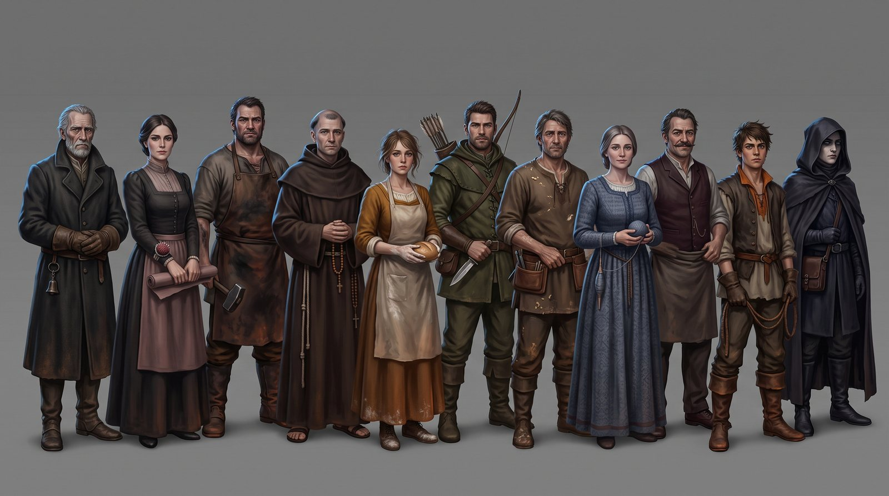

本文机制与参数按实际代码核对
（src/types.ts、src/constants.ts、src/lib/gameUtils.ts、
src/services/geminiService.ts）。
01要解决的问题
狼人杀是一个建立在信息不对称之上的游戏。它的全部乐趣来自： 有人知道你不知道的事，而你要从他的发言里把它推出来。
把 11 个位置交给 LLM，最容易出的事故不是「AI 说话不像人」，而是信息边界失守—— 一个平民的发言里出现了只有狼人才知道的信息，或者预言家「猜」中了从未查验过的身份。 一旦发生，玩家立刻会察觉这局是假的，而且无法通过后续的精彩发言挽回。
本文回答三个问题：
- 信息边界应该在哪一层强制？prompt 里叮嘱，还是根本不给数据？
- 当模型返回了无法解析的内容时，游戏该怎么办？
- 12 个 Agent、每天多轮发言与投票，成本怎么控制在可接受范围？
02局配置
12 人标准局。玩家固定为 1 号，其余 11 位由 AI 扮演。

| 身份 | 数量 | 技能 |
|---|---|---|
| 🐺 狼人 | 4 | 每晚集体击杀一名好人；白天伪装 |
| 🔮 预言家 | 1 | 每晚查验一人的阵营 |
| 🧙 女巫 | 1 | 解药 ×1、毒药 ×1，每晚最多用一瓶，不可自救 |
| 🏹 猎人 | 1 | 被击杀或被放逐时开枪带走一人（被毒杀时不可开枪） |
| 🛡️ 守卫 或 🃏 白痴 | 1 | 每局随机其一——第 12 个位置是浮动的 |
| 👤 平民 | 4 | 无技能 |
第 12 个位置随机在守卫与白痴之间二选一，是个成本很低但收益明显的设计： 玩家无法在开局就确定场上有没有守卫， 「昨晚平安夜」这条信息因此同时兼容「守卫守对了」和「女巫用了解药」两种解释， 推理空间被显著撑开。
规则里保留了标准局的复杂交互，包括守卫与解药同时作用于同一人时该玩家反而死亡（奶穿）、 白痴翻牌后失去投票权但保留发言权、警长 1.5 票并决定发言顺序、死亡时可传递或撕毁警徽。 胜负判定为：狼全灭则好人胜；狼数 ≥ 好人数则狼胜。
03确定性状态机
整局由一个 15 阶段的枚举驱动。阶段推进、死亡结算、胜负判定全部是确定性代码，AI 不参与。
| 时段 | 阶段 |
|---|---|
| 夜晚 | NIGHT_GUARD → NIGHT_WOLVES → NIGHT_SEER → NIGHT_WITCH → NIGHT_RESULT |
| 警长竞选 仅第一天 | SHERIFF_ELECT → SHERIFF_SPEECH → SHERIFF_VOTE → SHERIFF_RESULT |
| 白天 | DAY_DISCUSSION → DAY_VOTING → DAY_RESULT → SHERIFF_ACTION |
| 边界 | INIT、GAME_OVER |
AI 从不推进游戏，只在游戏问它时回答一个问题。
这个分工是整个架构的地基。如果让 AI 决定「现在该进入白天了」或「他死了」， 游戏状态就会随对话漂移——两个 Agent 可能对当前是第几天产生分歧， 而这类不一致在社交推理游戏里是致命的：所有推理都建立在共同的事实基础上。
04信息分区
每次调用 AI 前，buildGameContext(player, gameState) 为那一个具体的 Agent
现场拼装一份上下文。公共信息人人有份，私有信息只发给该身份。
这一点值得说清楚，因为两种做法的可靠性差着数量级：
| 做法 | 可靠性 | 失败时的表现 |
|---|---|---|
| 把全部信息给模型，在 prompt 里要求「你是平民，不要使用狼人信息」 | 不可靠——依赖模型的服从性，且无法验证 | 偶发泄漏，且难以复现和定位 |
| 构造上下文时就不放入（本作做法） | 可靠——是代码约束，不是模型行为 | 不会发生 |
公共信息里有一处细节：出局玩家的身份是公开的
（3号(狼人,被投票,第2天)），这符合狼人杀的实际规则，
也给了 AI 复盘的依据——它需要能说出「昨天被票出去的是狼，说明当时跟票的人有问题」这种话。
05结构化输出与兜底
除了白天发言是自然语言，所有决策都要求模型返回 JSON，
并通过 response_format: json_object 约束。每种决策有独立的函数与 schema：
| 决策 | 返回 | 解析失败时的兜底 |
|---|---|---|
| 投票 | {voteId, reason} | {voteId: -1} 弃权 |
| 狼人击杀 | {targetId} | -1，由代码兜底 |
| 预言家查验 | {targetId} | -1 |
| 女巫用药 | {action, targetId?} | {action: "skip"} 不用药 |
| 守卫守护 | {targetId} | -1 空守 |
| 猎人开枪 | {targetId} | -1 不开枪 |
| 是否上警 | {run} | false 不上警 |
| 警徽移交 | {targetId} | -1 撕毁 |
解析统一走 safeJSON<T>(text, fallback)：先剥掉模型可能包裹的
```json 围栏，再 JSON.parse，失败则返回兜底值。
注意每个兜底值的共同点：它们都是合法的「什么都不做」，而不是随机值或抛错。
这是与 LLM 集成时最重要的一条工程原则。模型偶尔会返回无法解析的内容， 这是概率性的、无法完全消除的。如果解析失败就崩溃，游戏在长局里必然中断； 如果失败就随机选一个目标，会产生玩家无法理解的诡异行为。 降级成一个合法的空操作，游戏继续，玩家最多觉得「这个 AI 今晚没动」—— 而这在真实牌局里也会发生。
06上下文与成本
一局 12 人狼人杀的调用量是可观的：每天每个存活 AI 至少一次发言 + 一次投票， 夜里还有各神职的行动。如果每次都把完整历史塞进去，token 消耗会随天数平方增长。
控制手段
-
发言记录只取最近 15 条（
logs.slice(-15)）。 狼人杀的推理主要依赖近期发言与当前存活结构；更早的内容已经沉淀进「出局名单 + 身份公开」里， 被压缩成了结构化状态，不需要以原文形式重复携带。 - 局面以结构化摘要而非原文呈现。存活/出局、警长、药品、查验记录都是短标签， 不是叙述性文字。
- 决策类调用限制输出为 JSON，输出 token 极少。
-
选用 flash 级模型（
deepseek-v4-flash）。 社交推理需要的是快速的立场判断，不是长链推理。
「近 15 条 + 结构化摘要」这个组合本质上是一套分层记忆： 近期用原文、中期用结构化事实、远期直接丢弃。 它没有引入向量检索，因为狼人杀的信息量天然有界——一局最多十几天， 重要事实不超过几十条，用不着检索。
07防幻觉的三道措施
社交推理里最伤的幻觉是捏造游戏事件—— AI 说「昨天 5 号跳了预言家」而实际上没有。 这会污染其他 Agent 的推理，并让玩家彻底失去信任。三道措施依次生效：
- 不给不该有的数据（第 04 节）。大部分越界从源头被切断。
- 上下文末尾的硬性声明。每次调用都以这一行结尾： 「⚠️ 重要：你只能基于以上真实信息发言，严禁捏造不存在的游戏事件！」 位置在上下文最末、紧邻任务指令，是模型注意力最强的位置。
- 决策与表达分离。投票、击杀、查验这些会改变游戏状态的动作走 JSON， 由代码校验后执行；自然语言只用于发言。 即使发言里含有幻觉，它也无法直接改写世界状态——最多影响其他 Agent 的判断， 而这在真实牌局里叫「造谣」，本来就是玩法的一部分。
第 3 条是这个架构最幸运的一点：狼人杀恰好是一个「说谎是合法玩法」的游戏。 在别的产品里，AI 说错话是 bug；在这里，只要它改不了事实，说错话最多是一次糟糕的发言。 选对了题材，一半的 AI 可靠性问题被规则本身吸收了。
08策略知识写在哪
SYSTEM_PROMPT 注入每一次调用，包含三部分：身份构成、各角色技能的完整规则、
以及按身份分列的核心策略。
策略部分写得相当具体，例如预言家一条写着 「必须在第一天警长竞选时上警起跳，争夺警徽——这是铁则」。
把策略写死进 system prompt，好处是 AI 的行为符合真实牌局的套路，玩家不会觉得对手在乱打。 代价是所有 Agent 共享同一套策略认知，打法趋同—— 11 个 AI 可能表现得像同一个人的 11 个分身。
真实牌局的乐趣有相当一部分来自玩家风格各异：有人激进有人保守，有人爱冲票有人爱苟。 下一步应当在共享规则之上，为每个 Agent 叠加一层个体风格 （激进度、话痨度、跟票倾向），并观察它对发言多样性与跟票行为的实际影响。
09技术实现
| 项 | 选择 |
|---|---|
| 前端 | React + TypeScript + Vite |
| 模型 | DeepSeek deepseek-v4-flash，经 OpenAI SDK 指向 api.deepseek.com |
| 状态 | 全部在前端，单文件 App.tsx 驱动状态机（801 行） |
| 类型 | types.ts 定义 Role / Side / Phase / Player / GameLog / WitchStatus / SeerRecord |
| 发牌 | Fisher-Yates 洗牌；第 12 个身份在守卫与白痴间随机 |
一、密钥在浏览器里。客户端以 dangerouslyAllowBrowser: true 初始化，
API key 走 VITE_ 前缀进前端包。这是本项目没有部署到 GitHub Pages 的直接原因——
公开部署等于公开密钥。需要一个服务端转发层才能对外开放试玩。
二、文件名与实现不符。services/geminiService.ts 里实际调用的是 DeepSeek，
文件名是早期版本的遗留。应当改名，否则会误导后来读代码的人。
10已知限制与下一步
已知限制
- 无法公开试玩（密钥问题，见上）。
- Agent 无跨局记忆。每局从零开始，AI 不会记得玩家上一局的打法。
- 无对局日志导出。目前只能在界面里回看，不便于批量分析行为模式。
下一步要验证的问题
- 跟票行为（herd behavior）的实际强度。 需要先加对局日志导出，统计「第二个投某人的 Agent，有多大比例跟随了第一个投票者」。 如果显著高于随机，说明 AI 在用「别人投了」代替独立判断—— 这既可能是缺陷，也可能恰好模拟了真实玩家的从众心理，需要数据才能判断。
- 个体风格对发言多样性的影响（见第 08 节）。
- 错误推断的扩散路径。一个 Agent 的错误结论会进入公共发言记录， 被其他 Agent 当作事实引用。需要观察这类污染在一局内能传播多远， 以及「近 15 条」的窗口是加速还是抑制了它。